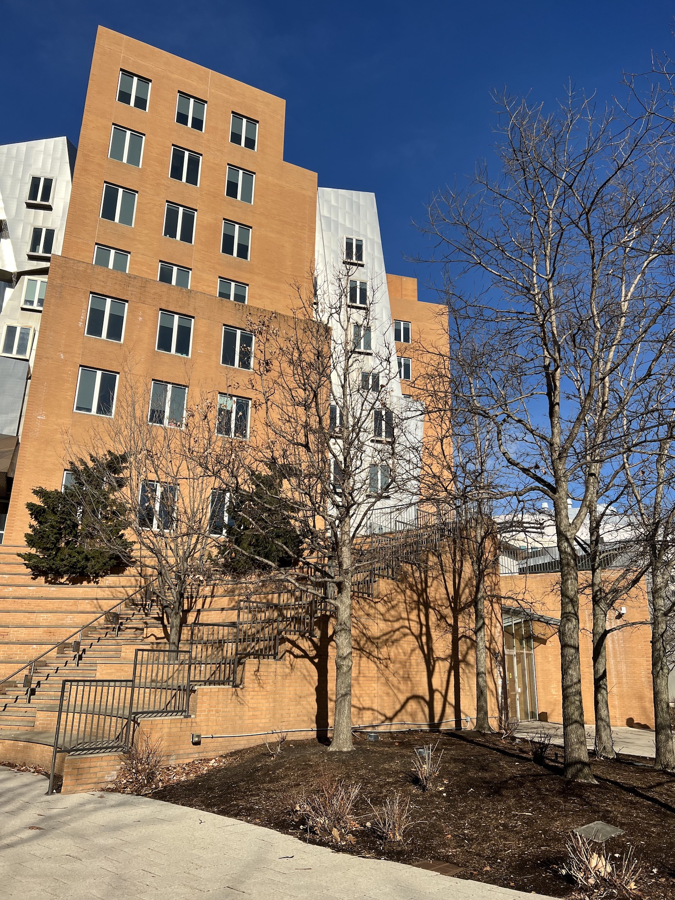
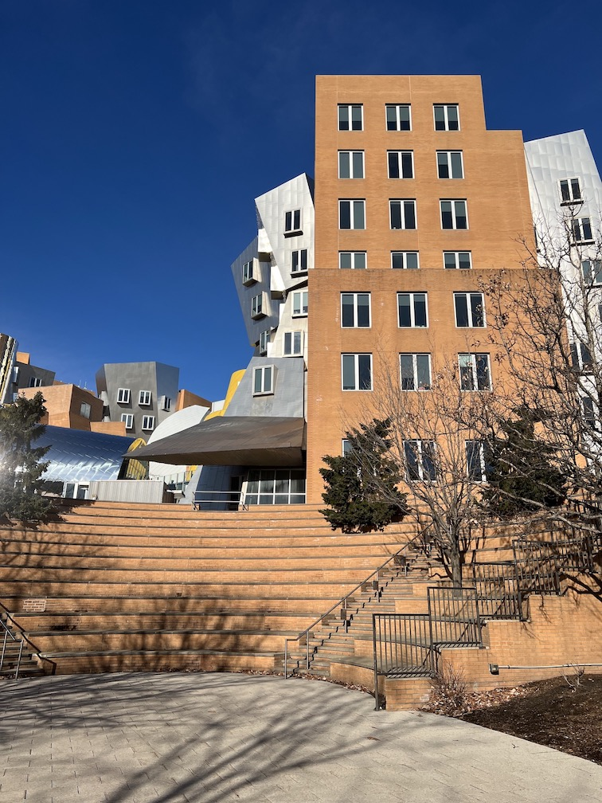
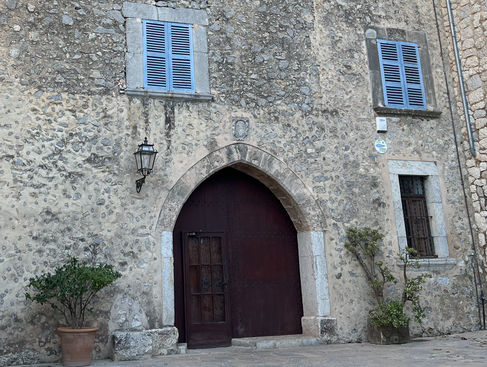
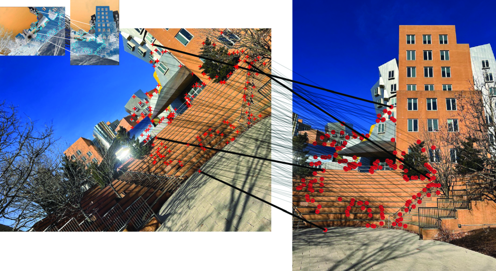
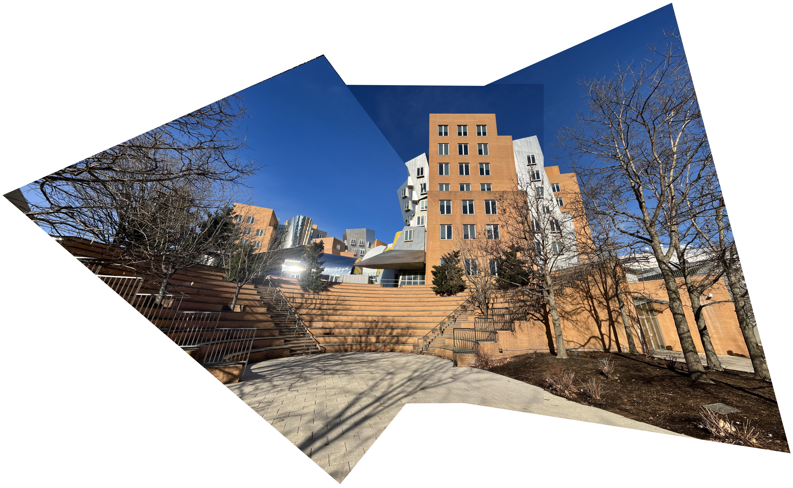

Homography
Plane Geometry and Image Alignment
What is a Homography?
Two Views of the Same 3D Point


Corresponding point coordinates related by a linear transformation
\[\lambda \begin{bmatrix} x' \\ y' \\ 1 \end{bmatrix} = \mathbf{H} \begin{bmatrix} x \\ y \\ 1 \end{bmatrix}\]
Definition of Homography
Homography is an invertible transformation between projective planes \(\mathbb{P}^2\)
Mathematical representation:
\[\lambda \begin{bmatrix} x' \\ y' \\ 1 \end{bmatrix} = \mathbf{H} \begin{bmatrix} x \\ y \\ 1 \end{bmatrix}\]
Where:
- \(\mathbf{H}\) is a \(3 \times 3\) matrix
- \(\lambda\) is an arbitrary scale factor
- 9 elements, 8 degrees of freedom (scale invariant)
When Does a Homography Occur?
Two main cases:
1. Camera Rotation
- Two cameras share the same center of projection
- Differ only in rotation
- Used for panorama creation
2. Planar Surface
- Two cameras observe a 3D plane
- Building facades, posters, ground planes, etc.
Camera Rotation and Homography
Geometry of Rotating Cameras
Two cameras with the same projection center, differing only in rotation
Mathematical Derivation
Camera 1 projection equation:
\[\lambda_1 \begin{bmatrix} x_1 \\ y_1 \\ 1 \end{bmatrix} = \mathbf{K}_1 \mathbf{R}_1 \begin{bmatrix} X \\ Y \\ Z \end{bmatrix}\]
Camera 2 projection equation:
\[\lambda_2 \begin{bmatrix} x_2 \\ y_2 \\ 1 \end{bmatrix} = \mathbf{K}_2 \mathbf{R}_2 \begin{bmatrix} X \\ Y \\ Z \end{bmatrix}\]
Multiplying the first equation by \(\mathbf{R}_1^{-1}\):
\[\begin{bmatrix} X \\ Y \\ Z \end{bmatrix} = \lambda_1 \mathbf{R}_1^{-1} \mathbf{K}_1^{-1} \begin{bmatrix} x_1 \\ y_1 \\ 1 \end{bmatrix}\]
Final Homography Form
Combining the two equations:
\[\lambda_2 \begin{bmatrix} x_2 \\ y_2 \\ 1 \end{bmatrix} = \mathbf{K}_2 \mathbf{R}_2 \mathbf{R}_1^{-1} \mathbf{K}_1^{-1} \begin{bmatrix} x_1 \\ y_1 \\ 1 \end{bmatrix}\]
Therefore:
\[\mathbf{H} = \mathbf{K}_2 \mathbf{R}_2 \mathbf{R}_1^{-1} \mathbf{K}_1^{-1}\]
Conclusion: Corresponding points in two rotated cameras are related by a homography
Image Plane Transformation
Transformation of image coordinates due to rotation
Planar Surface and Homography
Two Cameras Observing a Plane


Building facade photographed from different positions
Corresponding points on the planar facade are related by a homography
Plane Projection Geometry
World coordinate system placed on the plane (\(Z=0\))
Plane Projection Equation
General projection equation:
\[\lambda \begin{bmatrix} x \\ y \\ 1 \end{bmatrix} = \mathbf{K} \begin{bmatrix} \mathbf{R} & \mathbf{t} \end{bmatrix} \begin{bmatrix} X \\ Y \\ Z \\ 1 \end{bmatrix}\]
Points on the plane have \(Z = 0\):
\[\lambda \begin{bmatrix} x \\ y \\ 1 \end{bmatrix} = \mathbf{K} \begin{bmatrix} \mathbf{R} & \mathbf{t} \end{bmatrix} \begin{bmatrix} X \\ Y \\ 0 \\ 1 \end{bmatrix}\]
Homography Matrix Derivation
Denoting column vectors of \(\mathbf{R}\) as \(\mathbf{c}_1, \mathbf{c}_2, \mathbf{c}_3\):
\[\lambda \begin{bmatrix} x \\ y \\ 1 \end{bmatrix} = \mathbf{K} \begin{bmatrix} \mathbf{c}_1 & \mathbf{c}_2 & \mathbf{t} \end{bmatrix} \begin{bmatrix} X \\ Y \\ 1 \end{bmatrix}\]
Product of two \(3 \times 3\) matrices:
\[\lambda \begin{bmatrix} x \\ y \\ 1 \end{bmatrix} = \mathbf{H} \begin{bmatrix} X \\ Y \\ 1 \end{bmatrix}\]
Image coordinates of points on the plane are related by a homography
Relationship Between Two Cameras
Each camera has a plane-to-image homography:
- Camera 1: \(\lambda_1 \mathbf{x}_1 = \mathbf{H}_1 \mathbf{X}\)
- Camera 2: \(\lambda_2 \mathbf{x}_2 = \mathbf{H}_2 \mathbf{X}\)
Therefore:
\[\mathbf{x}_2 = \mathbf{H}_2 \mathbf{H}_1^{-1} \mathbf{x}_1\]
Conclusion: Corresponding points in two cameras observing a plane are also related by a homography
Homography Estimation
Finding Feature Correspondences

Correspondence detection using SURF descriptors
Direct Linear Transform (DLT)
Given a set of corresponding points, we can estimate the homography
Linear equation system:
\[\mathbf{A} \mathbf{h} = \mathbf{0}\]
- \(\mathbf{A}\): \(2N \times 9\) matrix (\(N\) correspondences)
- \(\mathbf{h}\): elements of \(\mathbf{H}\) stacked as a column vector (9D)
- 8 degrees of freedom → minimum 4 correspondences needed
Solution: Eigenvector of \(\mathbf{A}^\mathsf{T}\mathbf{A}\) with smallest eigenvalue
Need for Robust Estimation
Problems in practice:
- Feature detection errors
- Incorrect correspondences (outliers)
- Noise
Solution: RANSAC (Random Sample Consensus)
Robust model fitting algorithm
RANSAC Algorithm
Core Idea of RANSAC
Robust fitting through random sampling and consensus
Basic procedure:
- Randomly select minimum number of points
- Estimate model from selected points
- Count inliers
- Repeat \(N\) times
- Select model with most inliers
RANSAC Visualization
RANSAC applied to line fitting problem
Determining Number of Iterations
Heuristic for required number of samples \(k\):
- \(n\): number of points needed to define model
- \(w\): probability that a random point is an inlier
- \(p\): probability of finding correct model
\[k = \frac{\log(1-p)}{\log(1-w^n)}\]
Example: 95% confidence, \(w=0.18\), \(n=2\) (line) \[k = \frac{\log(0.05)}{\log(1-0.18^2)} = 91\]
RANSAC for Homography Estimation
Applying to homography estimation:
- DLT requires 8 equations
- Each point provides 2 equations
- 4 correspondences needed
Procedure:
- Randomly select 4 correspondences
- Estimate \(\mathbf{H}\) using DLT
- Count inliers
- Repeat to find optimal \(\mathbf{H}\)
Application: Panorama Creation
Image Stitching
Creating large panoramas by stitching multiple images together
Requirements:
- Rotating camera (no translation)
- Estimate homography between adjacent images
- Align all images to a reference image
Algorithm:
- Detect correspondences using SURF
- Estimate homography using RANSAC + DLT
- Warp all images to reference view
Panorama Result

Panorama created from three overlapping images
Summary
Applications of Homography
Important application areas:
- Image stitching/panoramas: Combining multiple images
- Planar measurements: Calculate real distances from reference
- Bird’s-eye view: Top-down view of planes
- Augmented reality: Compositing content on planes
- Document scanning: Distortion correction
Various Estimation Methods
Beyond correspondences:
- Vanishing lines: Using horizon lines
- Vanishing points: Estimating intrinsic parameters for uncalibrated cameras
- Neural network based: Direct regression from two images
Reference: Abbas and Zisserman (2019)
Key Takeaways
Homography is a powerful geometric transformation
- Projective transformation between planes
- Occurs with camera rotation or planar surfaces
- \(3 \times 3\) matrix, 8 degrees of freedom
- Robustly estimated using DLT and RANSAC
- Various applications: panoramas, AR, etc.
Stronger constraint than epipolar constraint, but only applies under specific conditions